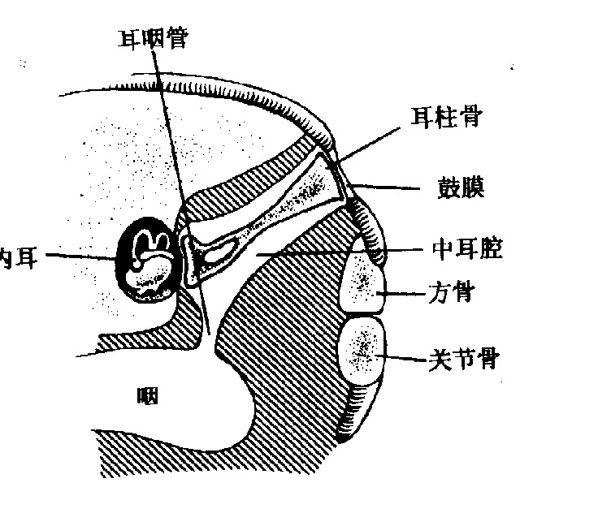
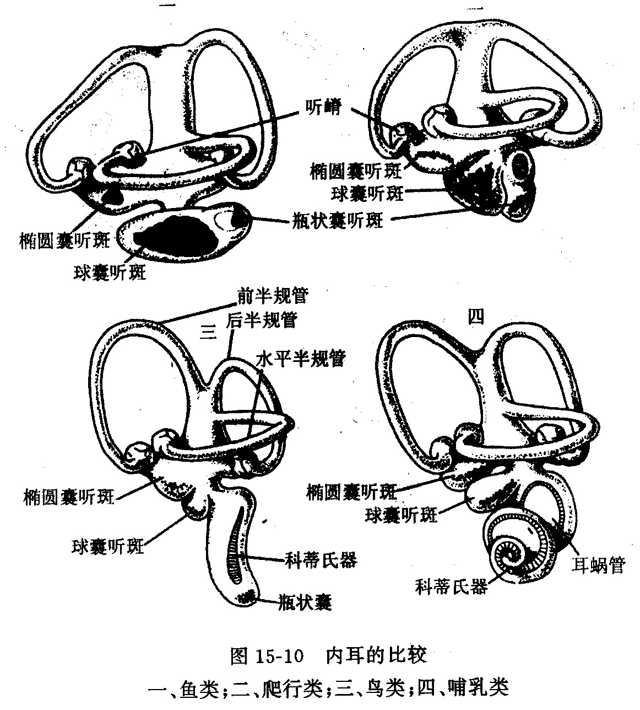

两栖纲的主要特征
两栖纲的主要特征是登陆适应"初步性"与"不完善性"的集中体现，核心包括：不完全的肺呼吸与呼吸多样化、不完全的双循环、脊柱分化与五趾型四肢、皮肤轻微角质化等。下面分系统详述。
（一）不完全的肺呼吸和呼吸的多样化（重点）
陆生两栖类成体呼吸方式包括 肺呼吸、口咽腔呼吸和皮肤呼吸 三种；有尾水生种类终生鳃呼吸和皮肤呼吸。
1. 肺的结构 肺位于胸腹腔内，仅有 1 对壁薄的囊，囊内壁呈 蜂窝状 以增加气体交换面积，但面积仍不大；肺囊壁有丰富毛细血管，常有弹性。肺结构简陋是两栖类呼吸"不完全"的结构基础。
2. 咽式呼吸（吞咽式呼吸，正压呼吸）——必考机制
两栖类成体的呼吸运动主要依靠 口咽腔底部的颤动升降 来完成。由于蛙、蟾等无尾两栖类 不具肋骨和胸廓，不能像高等脊椎动物那样靠胸廓扩张产生负压吸气，只能依靠 咽式呼吸（吞咽式呼吸） 即 正压呼吸 把空气"压"入肺。
咽式呼吸全过程：
入肺和出肺过程可重复多次（B→C），以充分利用吸入咽腔的氧气并减少失水。在 B→C→D 之前往往先发生 A→E→D 的口咽腔呼吸，故 肺呼吸过程通常也发生了口咽腔呼吸。
3. 口咽腔呼吸 蛙、蟾类的口咽腔黏膜富含毛细血管，口咽腔空气中的氧气可直接扩散进入血管发生气体交换。当喉门紧闭空气不入肺时，仅由口腔黏膜执行气体交换，可得约 1/10 的需氧量。
4. 皮肤呼吸 皮肤呼吸是成体的 辅助呼吸，约占蛙冬眠时呼吸氧量的 2/5；在冬眠时几乎成为 唯一呼吸方式。皮肤保持湿润、皮下血管丰富是皮肤呼吸的必要条件。
5. 幼体呼吸 幼体用鳃呼吸。早期有外鳃，后被皮肤形成的鳃盖遮掩并逐渐消失，蝾螈类另以新产生的 3 对外鳃 作呼吸器官。变态登陆后外鳃消失，由咽部腹侧长出一对肺。有些种类幼体内鳃和外鳃同在。

（二）不完全的双循环（重点中的重点）
两栖类成体心脏为 一心室二心房（比鱼类多了一个心房），静脉窦和动脉圆锥仍存在。因而开始出现 不完全的双循环，即 体循环 和 肺循环。
双循环途径：
- 左心房：接受由肺静脉回来的 动脉血；
- 右心房：接受由体静脉经静脉窦回来的 静脉血；
- 心室单一（无分隔或仅有不完全分隔）：左、右心房的血液在心室中 混合为混合血，故称"不完全"双循环。
动脉圆锥内有 螺旋瓣，能在一定程度上引导含氧较高的血液进入体动脉弓、含氧较低的血液进入肺皮动脉，起到一定的分流作用，但远未达到完全双循环的分流效率。
不完全双循环的后果：由于流往肺和全身的是相同的 混合血液，无论是皮肤、口腔黏膜、肺部还是全身，气体交换效率都较差，新陈代谢率较低，所以两栖类是 变温动物，行为上有 夏眠或冬眠。
淋巴系统包括 淋巴管和淋巴心 等，几乎遍布全身皮下组织（两栖类淋巴系统发达，有能搏动的淋巴心，弥补循环效率低）。
（三）支持和运动系统（已基本具备陆生动物模式）
1. 脊柱的分化
两栖类 首次出现颈椎和荐椎，这是陆生动物的重要特征。脊柱分为 颈椎（1块）、躯干椎、荐椎（1块）和尾椎 四个部分，尾椎间愈合成一块 尾杆骨。
- 颈椎（寰椎）：形状似环，与头骨枕髁相关节，使头部可灵活转动——适应陆地环境复杂化、头部需灵活转动；
- 荐椎：通过与腰带的关节把体重传给后肢——适应登陆后重力作用及运动。
但与真正陆栖脊椎动物相比，两栖类颈椎和荐椎各只有一块，在头部运动灵活程度及支持后肢力度方面还处于 不完善的初级阶段。
2. 带骨和肢骨（五趾型四肢）
（1）带骨 有肩带和腰带两种。
- 肩带：由肩胛骨、乌喙骨、上乌喙骨和锁骨等构成，胸部正中出现 胸骨，但与躯干椎横突或肋骨 互不连接（故无真正胸廓）。
- 腰带：髂骨、坐骨和耻骨构成骨盆。
两栖动物肩带不附着于头骨，腰带借荐椎与脊柱联结——这是四足动物与鱼类的重要区别。 肩带脱离头骨连接后，不但增进头部活动性，还极大扩展前肢活动范围。
（2）典型五趾型四肢 前肢包括上臂、前臂、腕、掌、指五部分，对应骨骼为肱骨、桡骨、尺骨、腕骨、掌骨、指骨；后肢包括股、胫、跗、跖、趾，对应股骨、胫骨、腓骨、跗骨、跖骨、趾骨。
登陆后五趾型四肢能承受体重并使身体在地面运动，但四肢位于 躯干侧面，不能抬高身体，运动速度极为有限。
3. 头骨与肌肉分化
头骨：已脱离肩带束缚，有了灵活运动的可能。
肌肉分化：
- 保留原始分节现象：无足目和有尾目躯干肌、无尾目腹直肌仍保留分节；
- 轴肌比例变化：因水平骨隔位置上移，轴上肌比例减少，腹部轴下肌增加，以在陆地更有效保护支持内脏；
- 附肢肌变得强大而复杂（适应四肢运动）。
（四）消化系统（分化较鱼类复杂）
消化系统包括消化道和消化腺。
1. 消化道 包括：口、口咽腔、食道、小肠、大肠、泄殖腔和泄殖腔孔。
两栖类消化道分化较鱼类复杂，出现了食道与胃、肠的进一步分化，与登陆后摄取多样化食物（昆虫等）相适应。口咽腔是空气和食物的共同通道（内鼻孔开口于此）。大肠通入泄殖腔，以泄殖腔孔通体外。
（五）神经系统和感觉器官
听觉：出现中耳腔，内有耳柱骨（columella）为镫骨前身，外端连鼓膜，内端连内耳卵圆窗，传导声波；内耳除三个半规管外，还具有瓶状囊（lagena），是陆生脊椎动物耳蜗的雏形。
嗅觉：鼻腔分化为内、外侧部，内鼻孔通口腔；出现犁鼻器（vomeronasal organ），位于鼻腔腹外侧，为化学感受器，与嗅觉相关。
视觉：出现眼睑、泪腺和瞬膜，可保持眼球湿润。
侧线：水生幼体及有尾目成体保留侧线；无尾目成体侧线退化。


| 系统 | 鱼类（对比） | 两栖类 | 登陆意义 |
|---|---|---|---|
| 心脏 | 一心房一心室 | 二心房一心室 | 出现双循环雏形 |
| 循环 | 单循环 | 不完全双循环(心室未分膈,混合血) | 肺循环+体循环 |
| 呼吸 | 鳃(单一步) | 肺+皮肤+口咽腔(咽式正压呼吸) | 适应空气呼吸 |
| 脊柱 | 躯干椎+尾椎(2区) | 颈+躯+荐+尾(4区) | 头转动+后肢承重 |
| 附肢 | 偶鳍 | 五趾型四肢 | 陆上承重运动 |
| 肩带 | 与头骨相连 | 脱离头骨 | 头灵活+前肢活动范围大 |
| 胸廓 | 无 | 无(胸骨不连肋骨) | 故只能咽式呼吸 |
| 皮肤 | 被鳞 | 裸露,轻微角质化,富腺体,能呼吸 | 保水+辅助呼吸 |
| 感觉 | 侧线(水生),无中耳 | 中耳+鼓膜+耳柱骨+瓶状囊,眼睑,内鼻孔,犁鼻器 | 适应空气介质 |
两栖纲主要特征核心记忆点
- 呼吸多样化：肺(咽式/正压呼吸)+皮肤呼吸+口咽腔呼吸；无胸廓→只能正压把气压入肺。冬眠时皮肤呼吸成唯一方式(占氧量2/5)。
- 不完全双循环：二心房一心室，心室未分膈→混合血；动脉圆锥有螺旋瓣部分分流；体循环+肺循环。后果：代谢低→变温→冬眠。
- 脊柱四区：颈(寰椎)+躯+荐+尾(尾杆骨)，比鱼多颈椎、荐椎。
- 五趾型四肢：前肢肱桡尺腕掌指/后肢股胫腓跗跖趾；肩带脱离头骨、腰带借荐椎连脊柱=四足动物与鱼的关键区别。
- 皮肤：轻微角质化+黏液腺+毒腺+色素细胞+能呼吸；蟾蜍较耐旱。
- 消化：口→口咽腔→食道→小肠→大肠→泄殖腔→泄殖腔孔。
- 新器官：内鼻孔、中耳+鼓膜+耳柱骨+瓶状囊、声带、声囊、眼睑、犁鼻器。
- 两个"不完全"：肺呼吸不完全(需皮肤辅助)、双循环不完全(心室未分膈)。